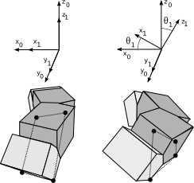

Ya he terminado el capítulo sobre las configuraciones mínimas, que son los robots modulares con topología de 1D que tienen el menor número de módulos y que pueden desplazarse.
Se pueden ver vídeos de ellas en acción en la página de Minicube.
Ahora me voy a tomar unas días de descanso en la playa, con mi mujer y mi Padawan, y el 21 de Agosto regresaré para continuar con el capítulo de los experimentos, que están al 60% más o menos.